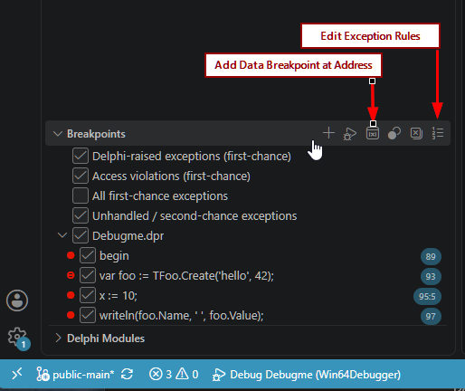
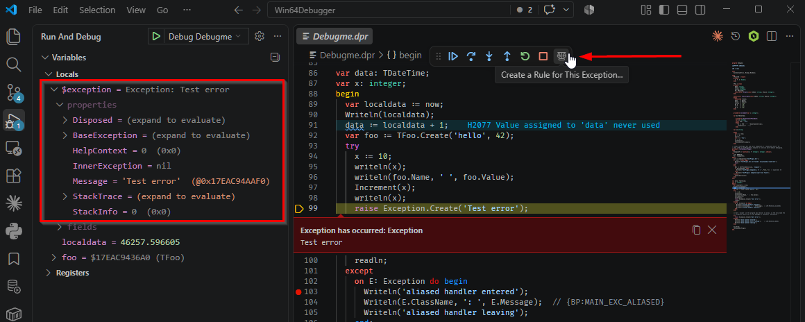
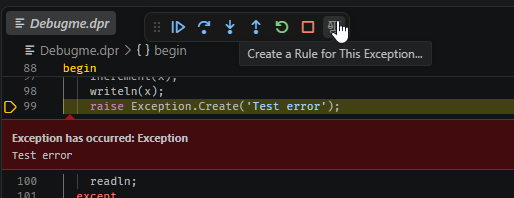
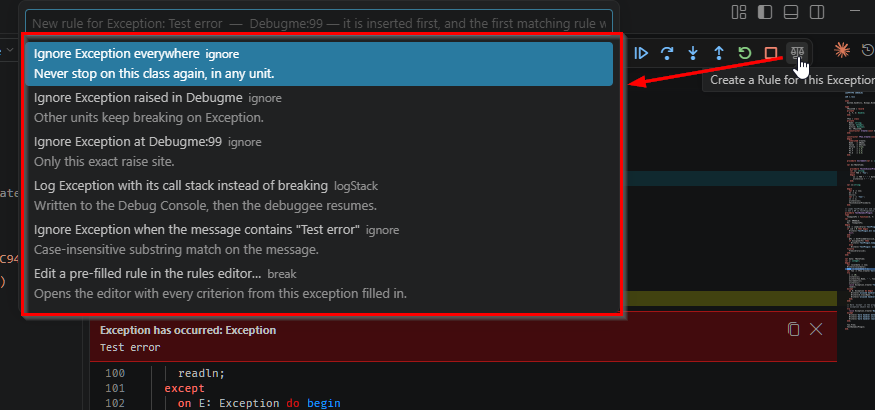
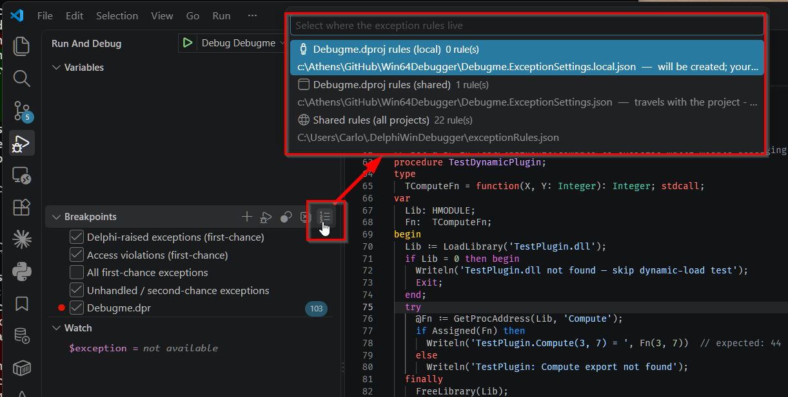
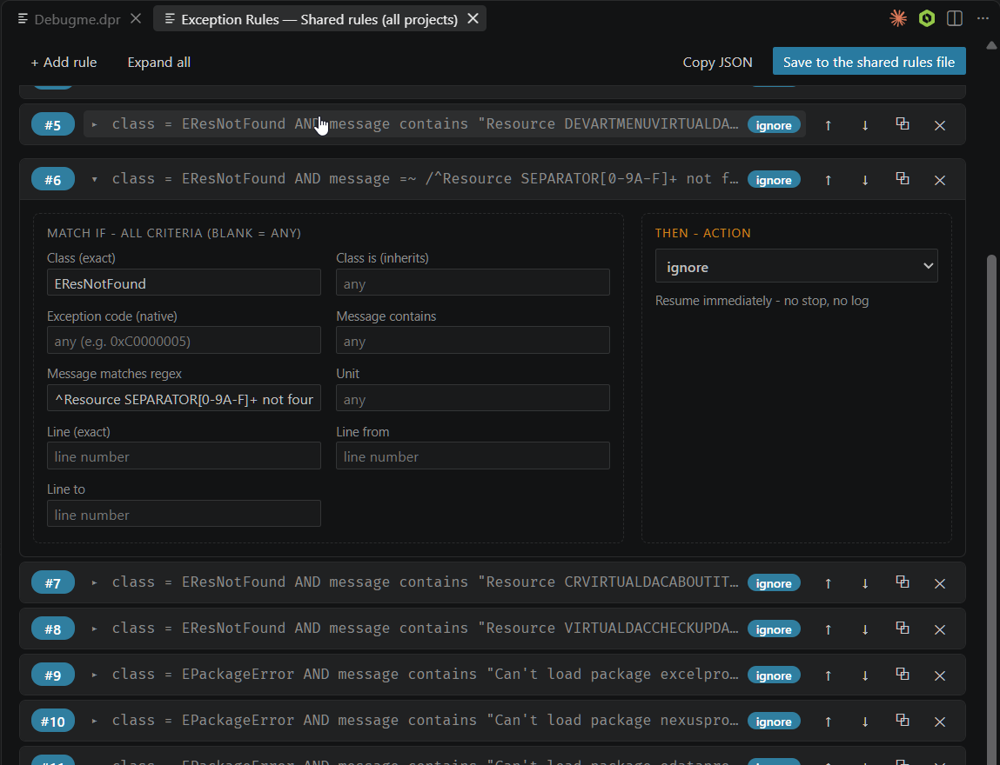

4. Exception handling
Delphi codebases raise exceptions as control flow. A debugger that stops on every one of them is unusable on a real project, and a debugger that stops on none of them is useless. This chapter is about landing in between.
The four filters
The BREAKPOINTS view lists four exception filters. They are the coarse control, and for many projects they are enough.
| Filter | Stops on | Default |
|---|---|---|
delphi | First-chance Delphi language raises | on |
av | First-chance access violations | on |
all | Every first-chance exception, including native ones | off |
unhandled | Second-chance — the ones that actually crash the program | always on |
unhandled is the one filter you cannot switch off. Unticking it in the
BREAKPOINTS view has no effect — the adapter keeps it armed regardless, because silently
swallowing a second-chance exception almost always wedges the program, and a debugger
that lets you do that by accident is not doing its job.

delphi row reveals its pencil — Edit Condition… — which is
where the delphiExceptionClasses allowlist gets set from the GUI; the other
three filters have no such affordance, since they are plain on/off. The callout is the
Edit Exception Rules… title-bar icon, covered below
— it only appears when the mouse is over the view.
A first-chance break passes the exception through correctly when you continue, so the
debuggee’s own try/except still runs. You are looking at the raise, not
preventing the handler.
The delphi filter can be narrowed to specific classes — a comma- or
semicolon-separated allowlist such as EAccessViolation,EConvertError, empty
meaning every Delphi raise. There is no launch.json field for this: unlike
rules, filters are never configured from the launch configuration. Two ways to set it
instead — the GUI pencil below, or an agent over MCP through the
delphiExceptionClasses argument on launch_debuggee,
attach_from_config or set_exception_filters
(MCP).
VS Code exposes that same allowlist through the standard pencil icon it draws next to a
filter row on hover — its own generic mechanism for a per-filter condition
string, which this adapter wires up for the delphi filter only. It is not a
second, competing rule language: typing there applies the same narrowing MCP’s
delphiExceptionClasses does, just through the DAP setExceptionBreakpoints
channel instead of a tool call. The rule engine below is the tool for
anything past a flat class allowlist — per-unit, per-line, by message, or with an action
other than break.
What you see on a stop
The debugger reads the exception object’s class name and its
Exception.FMessage. For a native access violation with no Delphi object
behind it, it synthesises a description instead — “Access violation at
$RIP reading address $fault”.
The live exception object itself appears in Locals as a synthetic
$exception row, shown as Class: Message and expandable like any
other object. It works in Watch and hover too, so you can evaluate
$exception.Message or drill into a custom exception class’s own fields.

raise line, before control has reached any
handler. $exception is expandable like any other object — here showing
Message plus the rest of Exception’s own fields and properties.That is the exception object at the instant it was raised. What happens once you are actually inside a handler — still stopped several lines later, on an ordinary breakpoint that has nothing to do with the exception itself — is its own thing, and it is deliberately different depending on whether the handler gave the exception a name.
Inside the handler: aliased vs. anonymous
on E: Exception do declares E as an ordinary local, scoped to that
clause’s block — it shows up in Locals under whatever name you gave it, for as
long as the stop is anywhere inside that block, not only at the moment of the raise. A bare
except .. end with no on clause names nothing, so there is no local
to show; instead the block gets its own $exception row, live for the same
extent. The two are mutually exclusive by construction — a handler is never showing
both at once, because a block is either aliased or it is not.
Both are ordinary operands past that point: E.Message = 'Test error' or
$exception is EMyError work as breakpoint conditions exactly as well as they
work in a watch or a hover, because they go through the same expression evaluator either
way — typing $exception into Watch is a shortcut for the same lookup, not
a separate mechanism. Stopped somewhere with no exception in scope at all, both report why
rather than a bare parse error or an empty value.
.pdata, so it is x64
only — for a handler directly in a project’s .dpr main
block, and for a bare except’s $exception staying live past
the raise itself. Neither degrades silently: on x86 both report why rather than just not
appearing. An on E: alias inside an ordinary function or procedure is
unaffected either way — it has always worked as a normal local, on both bitnesses, and
is not part of what changed here. See chapter
11.
Creating a rule without writing JSON
Filters are on/off per category. The moment a specific EFileNotFound in one
unit is noise but the same class elsewhere is the bug you are chasing, you need a rule
— and the fastest way to write one is to let the debugger do it, from the exception
you are already looking at. Two commands, and you will use the second one far more often.
Create a Rule for This Exception…
Available only while stopped on an exception, from the floating debug toolbar.

It reads the exception in front of you and offers ready-made rules built from it — ignore this class everywhere, ignore it only in this unit, ignore only this exact raise site, log it with its stack instead of breaking, or match on a substring of its message. Pick one and it is written for you.

This is the answer to being interrupted for the third time by something the application handles perfectly well. The new rule is inserted first, which matters: first match wins, so it takes effect regardless of what is already in the list.
Edit Exception Rules…
From the title bar of the Breakpoints or Call Stack view — those icons appear when the mouse is over the view. It works with no session running, which is how you edit the shared rules file on its own.
It first asks where the rules should live — see where rules live for the three files behind this and how they rank. Each option shows how many rules it currently holds; a file that does not exist yet says so instead of a count, since saving there creates it. If there is only one possible target the question is skipped.

Then the editor itself, one card per rule:
- A plain-language summary of what the rule does, rewritten as you type — class = EAbort AND unit OracleData → ignore, or any exception → break when you have not filled anything in.
- The nine criteria as labelled fields, each with a hint explaining what it matches, and the action as a dropdown whose help text changes with the selection.
- Buttons to move the rule up or down — which is what changes the outcome, since evaluation stops at the first match — plus duplicate and delete. Delete asks nothing, so be deliberate.
- Validation on every keystroke. A malformed regular expression, a line range whose end precedes its start, a missing action, a field name that is not one of the nine — all are listed at the bottom, and the save button stays disabled until they are fixed.
{ "exceptionRules": [...] } rather than a bare array — survives
untouched, since only the rule array itself is replaced.
Closing the editor tab with unsaved edits keeps them: reopen it and it offers to restore what you had. A read-only banner appears instead of the save button if the workspace is not trusted — copy the JSON out in that case.

#6 is
expanded: the nine criteria on the left, the action and its plain-language effect on the
right. Collapsed cards show the same plain-language summary this chapter’s earlier
bullet list describes, plus the move/duplicate/delete controls on each row.The rule engine underneath
Both editors above write into whichever of the three files you picked —
where rules live covers exactly which files those are and in
what order they rank. Inside any of them a rule is a flat JSON object: any number of
optional criteria, plus a required action. Knowing the shape is what lets you
hand-edit a file faster than reopening the GUI for a one-word change, or write a rule the
editor cannot express yet.
Each file is either a bare array of rules, or an object with an exceptionRules
key holding the same array — the editor preserves whichever shape it finds:
[
{ "class": "EAbort", "action": "ignore" },
{ "messageRegex": "ORA-\\d+", "action": "logStack" },
{ "class": "EAccessViolation", "unit": "OracleData",
"lineFrom": 2700, "lineTo": 2800, "action": "break" }
]Criteria present in a rule are AND-ed; criteria you omit are wildcards. Evaluation is first match wins, top to bottom.
Criteria
| Key | Type | Matches |
|---|---|---|
class | string or array | The runtime (leaf) class, exactly, case-insensitively. An array matches any of the listed names. |
classIs | string or array | The runtime class or any ancestor — Delphi is semantics. Use this to catch a whole family. |
code | string, integer, or array | The Win32 exception code, hex ("0xC0000005") or decimal. The only criterion that can match a native, non-Delphi exception. |
message | string | Case-insensitive substring of the exception message. |
messageRegex | string | Regular expression against the message, case-insensitive. |
unit | string | The unit the exception was raised in, by basename (the .pas is optional). The special value "*unknown*" matches raises with no resolvable source location. |
line | integer | A single source line — shorthand for setting lineFrom and lineTo to the same value. |
lineFrom / lineTo | integer | Inclusive bounds of a source-line range. |
Actions
| Action | Effect |
|---|---|
ignore | Resume silently |
log | Write class: message to the console, then resume |
logStack | The same, plus the call stack |
break | Stop in the debugger |
action is mandatory, and a rule whose action is missing or
misspelled is dropped without a message in the Debug Console — the note
goes to the adapter’s log file, which is off by default. If a rule appears to have no
effect at all, check its action spelling first.
Where the criteria come from
unit, line and the line range refer to the raise
site — the first stack frame with known source — not to the address the OS
reported the exception at. Using them makes the adapter walk the stack on every
exception, which is a real cost with the all filter switched on.
Two consequences worth knowing before you write rules against them.
unit: "*unknown*" means there is no raise site, so any line
criteria on that same rule can never be evaluated. And because line seeds
both bounds before lineFrom / lineTo are applied,
{ "line": 100, "lineTo": 200 } means the range 100 to 200, not line 100.
class also matches the synthesised names the debugger uses for exceptions
with no Delphi object — EAccessViolation for an access violation, and
Exception 0x… forms for other native codes.
One exception can never be matched by a rule:
TThread.NameThreadForDebugging raises code 0x406D1388 purely to
announce a thread name, and the debugger consumes it before any filter or rule runs. It
never surfaces as a stop; the name shows up on the
thread’s row in the Call Stack instead.
Stepping out of an exception
Step over, into and out all work while stopped on an exception, and run to the nearest enclosing handler. The debugger finds that handler by deriving it from the binary itself and setting a one-shot breakpoint there — it does not guess.
Where the handler address cannot be proven — which is the case for every
try/finally, and for every bare except on a 32-bit target — the
step is refused with a stated reason instead. That is deliberate. A guessed handler
address would resume the program somewhere arbitrary, and you would have no way to tell.